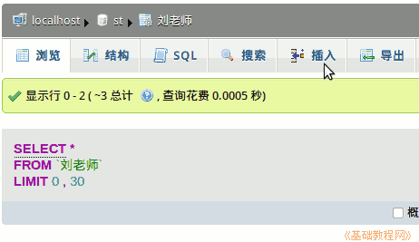

2011-2012 第一学期八年级电子表格教学课程设计
作者：TeliuTe 来源：基础教程网
二十二、学会添加记录 返回目录 下一课
学习目标：学会在数据表中添加记录；
注意事项：找自己的表进入，不要进错了；
1、添加记录
1）登录数据库，点左边的st数据库，找自己的表点击进入；
2）在上边找到“插入”，点击进入；

3）按顺序依次输入时间、地点、人物和事件；
4）按照“操作指南”添加一条记录，然后点“执行”；
板书设计：第22课 学会添加记录
1.数据库中添加数据信息
2.打开st数据库、自己的表
3.时间：今天，地点：计算机(1)室 ，姓名
4.事件写个人简介，自己的信息，爱好特长，优缺点
5.
---操作指南---
1、新建三个标签，登录数据库 st
2、打开左边st，打开自己的表(瞄准)
3、点上边的“插入”，依次输入
4、点“执行”完成
课后记 2011-11-30 15:43：
今天教委要来检查，到处都有些不同的气氛
上课没什么影响，或者是信技课关系不大
--
让整队的同学负责好，一队一队进来
自己还在神游没缓过来，空空荡荡的不知想什么
--
学生一如既往进来高高兴兴地吵闹一阵
然后静下来登录自己的号，查看留言提醒
--
讲的稍稍有些跳跃，一下思维跟不上了
声音也还是没练好，还是生气的语气
--
再过几年或许就练好了，时间总归可以磨炼
平时也自己留心适时提醒一下
--
第一课添加个人信息，以后就以这个为重点了
每节课把下一节的布置一下，时间久了或许会有效果
--
日志只写前两条就行了，后面的写在数据库里了
当时建表的时候，应当加一个日志的就好了
--
直接把日志写到数据库里，这样省事些
其实也不用，日志写习惯了，连续写下去也可以
--
有个同学把上次的表弄丢了，可能是忘记名字了也有可能
另一个表设置有问题，类型不对，结果出来的界面跟大家不同
--
重新建一个，忘记了，在旁边指导，稍稍有些着急，语气多练要
utf8是怎么回事不太明白，只是先照着用就是了
本节学习了添加记录的基础知识，如果你成功地完成了练习，请继续学习下一课内容；
返回目录 下一课
本教程由86团学校TeliuTe制作|著作权所有
基础教程网：http://teliute.org/
美丽的校园……
转载和引用本站内容，请保留版权信息和本站链接。